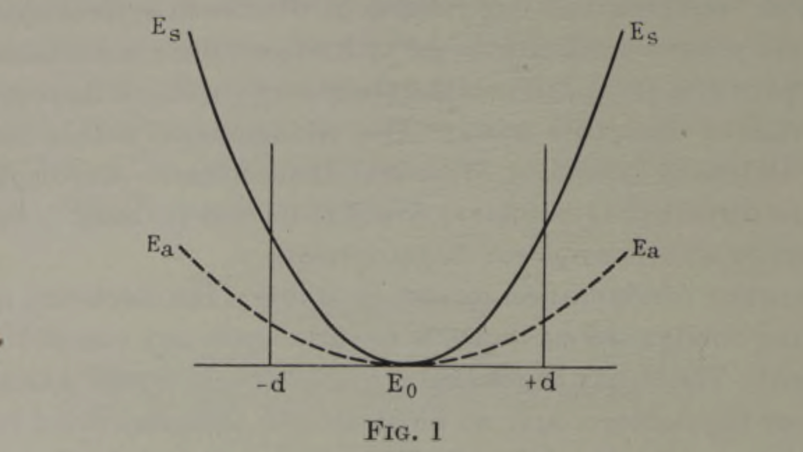

Thinking about Molecules: The Jahn-Teller Theorem
Recently I was teaching the Jahn-Teller Effect to a group of undergraduate chemists. Not really being a card-carrying chemist anymore1, I approached it from quite a physical point of view - giving them the strong statement of the Jahn-Teller Theorem (JTT) from the original publications :
Stability and degeneracy are not possible simultaneously unless the molecule is a linear one.
Specifically in the case we are talking about, we mean orbital degeneracy - where the valence electrons of the molecule occupy a degenerate set of orbitals (e.g. a \(\pi^1\) configuration in a linear molecule or an \(e_g^2\) configuration in a d-block complex). The JTT essentially says if this degeneracy occurs in a nonlinear molecule, that the symmetry of the molecule will be reduced in order to remove the degeneracy, and lower the overall energy of the molecule. This way of stating the JTT without a specific molecular context given up front caused some confusion, which I think shines two interesting lights on how we teach students to think about chemistry:
- We tend to teach molecular structure in a very step-by-step way. Like, a molecule forms with a structure, the molecule notices it can change it's structure to lower its energy, so it changes. This clearly isn't really how it works, but I think we inadvertently reinforce that view.
- We sometimes get siloed into our IOP boxes and fail to communicate how general lots of concepts are (i.e. the JTT applies to all molecules).
The Jahn-Teller Theorem provides nice examples of both of these things which are explained in this post. Below the rest of this post is a (hopefully) readable summary of the main ideas of the arguments in the original paper from Jahn and Teller in 1937 - which actually provide a nice, if quite physical, way to introduce the idea.
d-block Complexes and step-by-step bonding
The traditional way of teaching the JTT in chemistry is to talk about a Jahn-Teller Distortion, and specifically a Jahn-Teller Distortion of an Octahedral Complex (at least, that seems to be the example that is universally used). Here we have a familiar picture of an asymmetrically filled set of degenerate orbitals, that, after a distortion where the symmetry descends from \(O_h\) to \(D_{4h}\) can produce a configuration with a lower overall energy. Something like the below - clearly the energy is lowered in \(D_{4h}\) relative to \(O_h\) symmetry.

In my lecture, I then went through a range of octahedral \(d^n\) configurations, asking students to tell me whether we would expect to see a distortion or not. The confusion arose around the \(d^8\) configuration \(t_{2g}^6 e_g^2\). They all told me that this configuration wouldn't distort (which, to be fair, it wouldn't really for any normal d-block complex example). I then asked why something like the below couldn't happen, where a degenerate state containing two electrons with paired spins distorts to create a clearly lower energy structure, as the initial state is still spatially degenerate and so shouldn't be stable according to the JTT.
The answer was overwhelmingly you can't make that initial state with paired spins because it violates Hund's rules.
This answer was interesting because I think it belies some fundamental issue in how we teach students to think about chemistry. Whether subconsciously or not, the students were basically thinking of this process as:
- Find the electron configuration.
- Fill up the orbitals according to Hund's rules.
- Look and see if a distortion can happen.
- If it can, do the distortion and preserve the orbital occupancy (and in particular, the spins) from step 2.
Obviously this isn't what happens - a complex like CuF\(_6\) doesn't start life as octahedral, then think 'shit, I could lower my energy by undergoing a distortion!' and then distort2. We then had quite an extensive discussion where it was clear that their view was that you had to first satisfy Hund, and then do a distortion - and satisfying Hund would mean that you have parallel spins in your ground state \(e_g^2\) configuration in \(O_h\), so can't move to a \(b_{1g}^2\) configuration with paired spins in the distorted \(D_{4h}\) structure. Once I said that whether you could do this depended on the energy cost of flipping a spin compared to the lowering due to the JTT3, they seemed OK with the idea, but the initial thought process was clearly quite 'sequential': form a complex, look at the electrons, if you can distort, then distort. This is a clear example of them thinking about molecular structure in a step-by-step way.
Now, obviously this step-by-step picture isn't really what happens, but it got me thinking that we (including myself) probably inadvertently reinforce this view with how we teach molecular structure from quite early levels in chemical education. Simple Lewis pictures of bonding where two fluorine atoms are hanging around being unstable and annoyed, until they meet each other and realise they can lower their collective energy, are one example that subscribes to this step-by-step idea. Clearly in that case the step-by-step model is much closer to the truth, and it's probably still the best way to teach chemical bonding at an introductory level, but the same step-by-step approach clearly breaks down in more complex cases. One of these cases is described below - a Jahn-Teller distortion in an organic molecule.
Jahn-Teller Effects in COT
In a lecture before the one just mentioned, I was talking about Hückel Theory and the basis of the \(4n+2\) rule for aromaticity. An interesting example here is to apply Hückel theory to cyclooctatetraene (COT)4, and look at the result.
We expect that the 8-membered ring should not be aromatic (it doesn't follow the \(4n+2\) rule), but a naive Hückel calculation on the structure above would actually imply that it is, or at least, that it is a bit. A fully delocalised, planar, COT has a lower energy than the non-delocalised variant using simple Hückel theory. So why is it not aromatic in practice?
Well, the Hückel theory electronic structure shows that COT has a degenerate ground state (the rough MO diagram is shown below, as calculated using simple Hückel Theory). Simple Hückel theory also assumes that COT is planar, but measurements show that it isn't. COT is distorted away from planar due to the Jahn-Teller Effect. The structure is distorted away from planar and this orbital degeneracy in the ground state is removed - a classic example of the JTT5. Note that if you took the step-by-step approach, and initially populated the COT molecular orbitals using Hund's rules (so had parallel spins in the HOMO), you would assume this was impossible as the wisdom is that you can't flip a spin. But in reality, the molecule doesn't start life planar - it never has to form that degenerate state with the paired or parallel spins in the first place!
More interestingly in this case, it was clear that most students hadn't considered Jahn-Teller Distortions as something that was possible in an organic molecule like COT. An informal show of hands revealed that most students believed that Jahn-Teller distortions were things that only happened to octahedral inorganic complexes, rather than a wider phenomenon that manifests itself in many different areas.
This is a bit of a shame - not least for Jahn and Teller, who did all the tedious group theory to demonstrate that it applies to every molecule - and I think is symptomatic of a wider issue with the silo-ing of chemistry education into 'inorganic', 'organic', and 'physical' boxes. Too often we fail to communicate how general a lot of ideas are - which does a disservice to our students, especially as the boundaries between those boxes are increasingly blurred.
Anyway, this experience felt interesting enough to me to warrant writing it down. Perhaps it will be interesting to you too, if you're into science education as well.
Appendix: Jahn and Teller's Argument Outlined Briefly
A reminder of the basic theorem:
Stability and degeneracy are not possible simultaneously unless the molecule is a linear one.
The structure of the argument proving this in the original paper essentially considers a hypothetical arrangement of nuclei (a nuclear configuration) and thinks about how the energy of the configuration can change if one of the nuclei is displaced. The key observation is that a given configuration cannot be stable if the electronic energy depends linearly on a nuclear displacement. In simple terms, if this was the case, then clearly you are always able to displace one of the nuclei to lower the energy - making a new, more stable, configuration. We can see this same idea mathematically, if we consider the change in the electronic energy \(E\) with the nuclear displacement along coordinate \(Q\), then a linear dependence means that:
Where we note that the force along \(Q\) , \(F_Q\), is given by the negative of the derivative of the energy:
The linear dependence of the energy on nuclear displacement therefore implies that \(F_Q\) is non-zero, which implies that there is then a force along coordinate \(Q\) that will distort the molecular structure: making the molecule unstable.
Then two illustrative examples are shown, the first of which goes roughly as follows. Imagine a triatomic linear molecule with one electron in its valence shell - or as described by Jahn and Teller, a single electron moving in the field of three nuclei lying on a straight line. The electronic states of this electron can be classified as \(\sigma\), \(\pi\), or \(\delta\) type as usual, where the \(\pi\) and \(\delta\) states are orbitally degenerate for a linear configuration6.
If, then, one of the three nuclei is displaced by a distance \(d\), then the degeneracy is lifted and the states have energies \(E_a\) and \(E_s\) depending on their symmetry relative to the plane of the nuclei (antisymmetric or symmetric). As \(d\) changes the two energies will change, and the energy as a function of \(d\) must be an even function as shown in the figure below from the original work: clearly the energy when the displacement is \(-d\) is the same as it is when it is \(+d\).

Hence, when the molecule is linear \(d=0\), \(E_a = E_s\), and the energy is minimised: we have simultaneous stability and degeneracy. In contrast, when the molecule is nonlinear, \(d \neq 0\) and \(E_a \neq E_s\): our most stable state is now either \(E_a\) or \(E_s\), but they must have different energies. To have stability, we have to lose our degeneracy.
This example captures the essence of the JTT: you cannot have stability and degeneracy simultaneously except when the molecule is linear. The bulk of the paper then uses some intricate group theory and perturbation theory arguments to show that for an orbitally degenerate state, the only case where these linear \(\frac{\partial E}{\partial Q}\) terms vanish is when the nuclear configuration has total axial symmetry: i.e. the nuclei lie on a straight line, and the molecule is linear. Thus, any nonlinear molecule with an orbitally degenerate ground state will always have some nonzero \(\frac{\partial E}{\partial Q}\) term, and hence some nonzero force \(F_Q\) that will distort the nuclear configuration in a way that lowers the energy and lifts the degeneracy.
-
Literally, as I let my RSC membership lapse after their pathetic response to the current crisis facing chemistry in UK HE. ↩
-
Also, Hund's rules only really work properly for atoms, but this is a pedantic point. ↩
-
And yeah, the energy cost of flipping a spin is normally much higher than the energy you get back by undergoing a JT distortion. ↩
-
This example is probably just about small and symmetrical enough for a masochist to do y han, but I would just use the excellent HuLiS program: https://ctom-ism2.github.io/hulis/index.shtml ↩
-
At least, within the simple Hückel Theory approximations. ↩
-
i.e. you can think about the \(\pi\) state as being one where the orbital angular momentum of the electron \(\lambda = \pm 1\) - corresponding to clockwise and anti-clockwise rotation around the internuclear axis. ↩